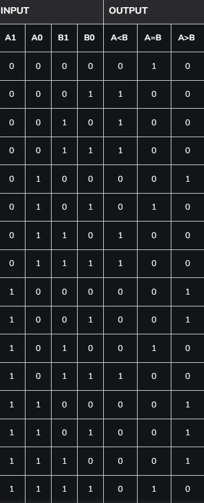
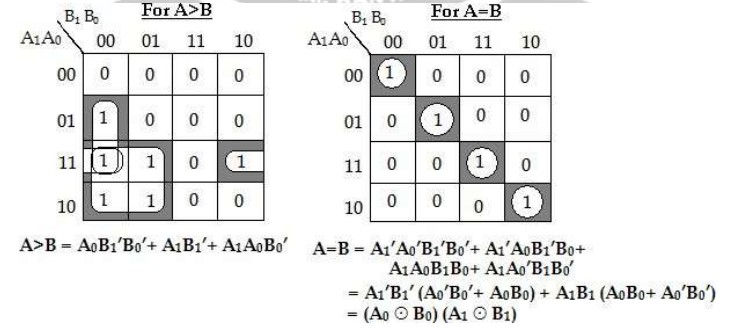
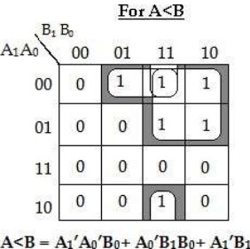
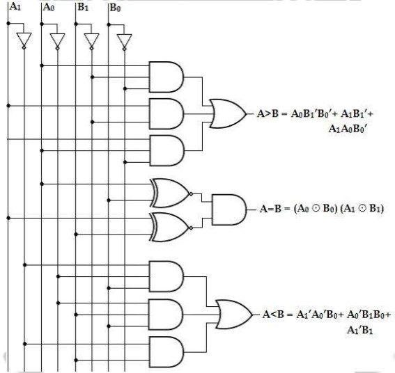

2-Bit Magnitude Comparator
A comparator used to compare two binary numbers each of two bits is called a 2-bit Magnitude comparator. It consists of four inputs and three outputs to generate less than, equal to, and greater than between two binary numbers.
The truth table for a 2-bit comparator is given below.
Truth Table:
K-Map:
 Logic Diagram:
